Старт · 10 минут
Почему результат разный?
Электроскоп заряжен: листочки разошлись. Касаемся шарика разными предметами.
- Пластмассовая линейка: листочки остались разведёнными.
- Рука: листочки опали.
Подумайте в парах: куда делся заряд? Попробуйте на модели справа.
Проводники и диэлектрики
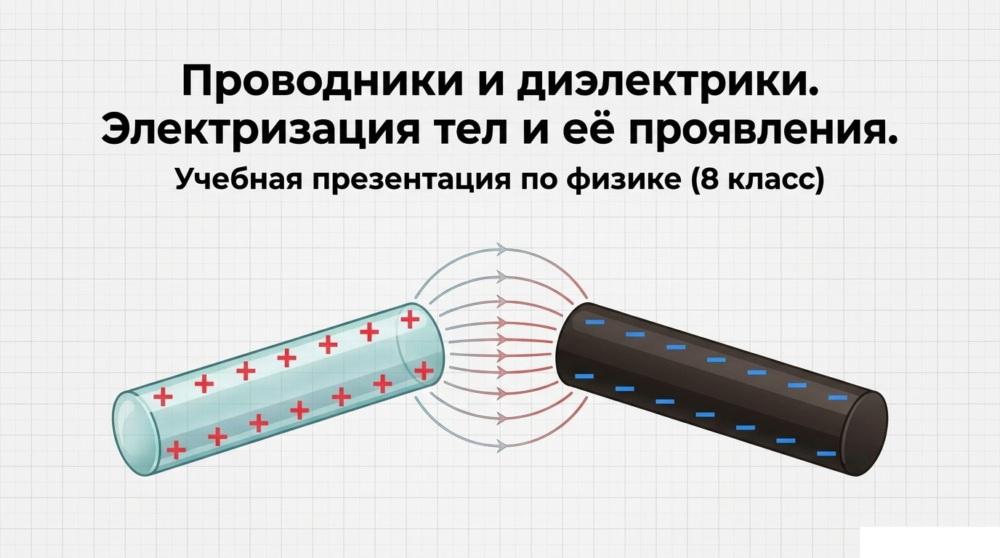
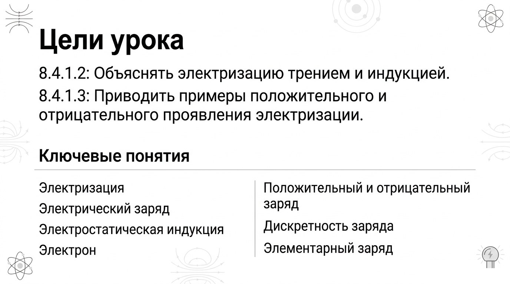
Старт · цели урока
Цели урока
К этому слайду вернёмся в конце урока и честно оценим, достигли мы целей.
1
Объяснить, чем проводники отличаются от диэлектриков.
8.4.1.2
2
Объяснить электризацию трением и влиянием (индукцией).
8.4.1.2
3
Привести примеры полезной и вредной электризации.
8.4.1.3
Баллы за урок: 10
Этап 1 · 2 балла знание и понимание · Этап 2 · 6 баллов три задания по 2 балла · Этап 3 · 2 балла анализ и оценка
Нужна помощь — карточка-подсказка. Закончил раньше — карточка с дополнительными заданиями (баллов не даёт).
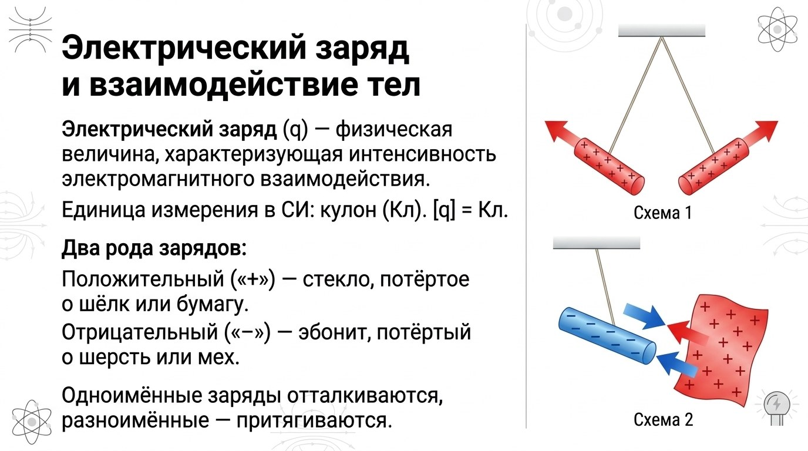
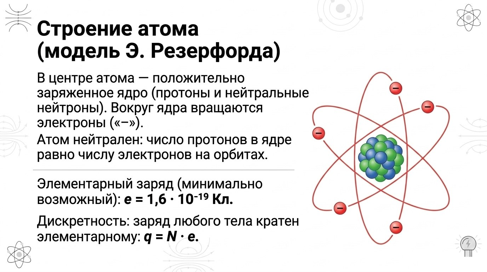
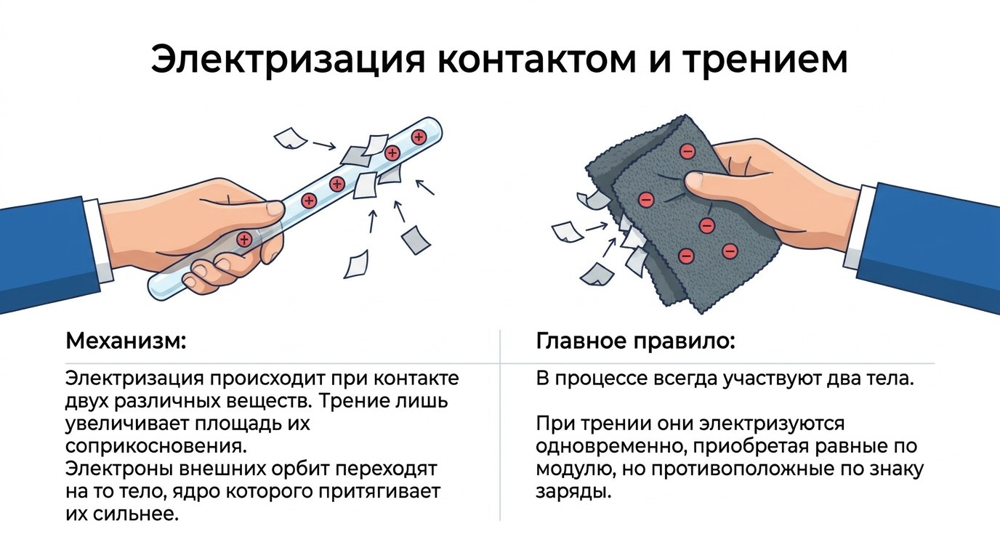
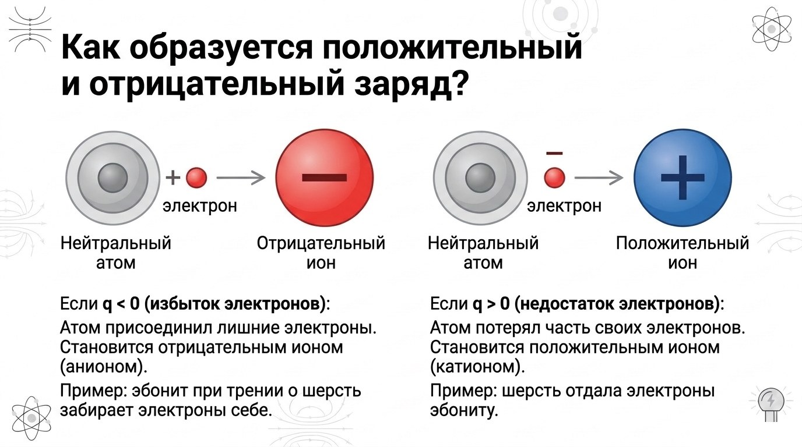
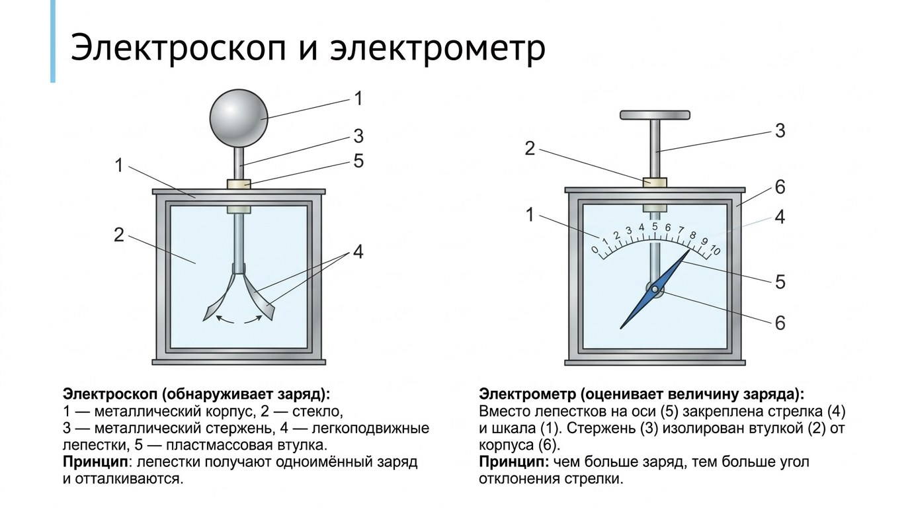
Виртуальная работа · песочница
Лаборатория 2. Электроскоп
Коснуться шарика предметом
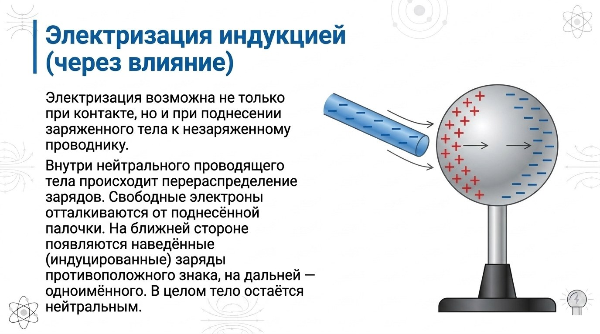
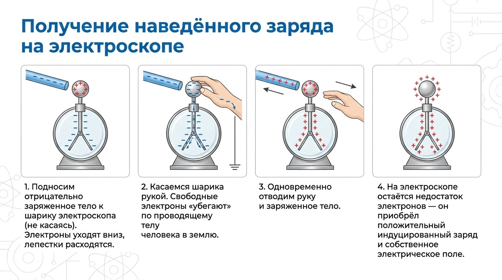
Новая информация · электризация влиянием (индукция)
Как зарядить тело, не касаясь его заряженным телом?
Шаг 0
Нажми «Шаг 1» и наблюдай за зарядами.
Шаг 0 из 5
Запомни: на электроскопе остаётся индуцированный (наведённый) заряд, противоположный заряду поднесённого тела. Электроскоп заряженное тело не касалось.
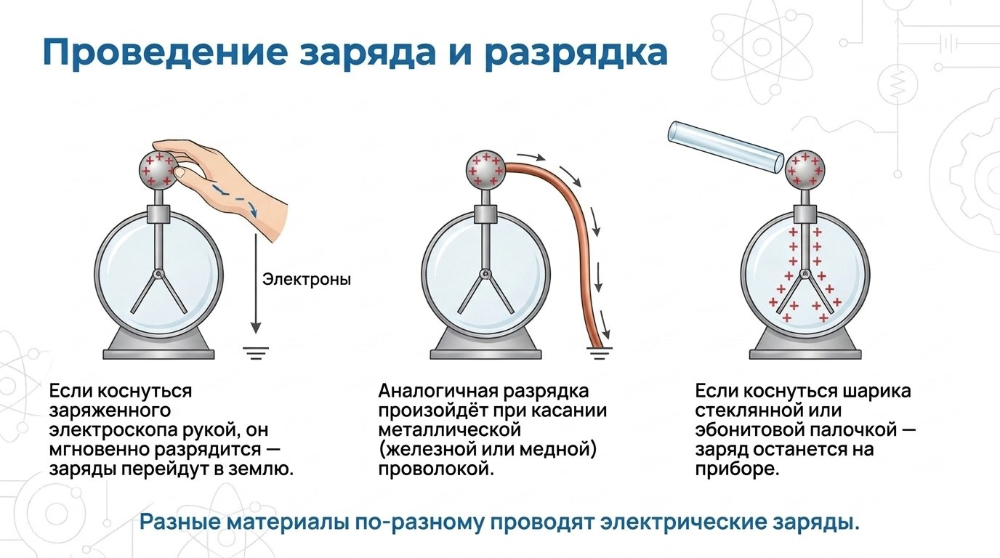
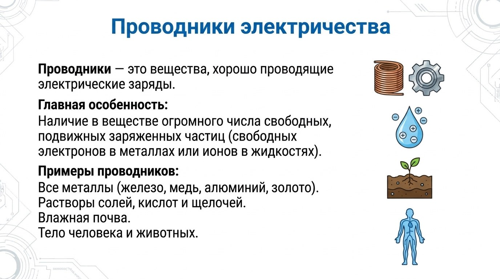
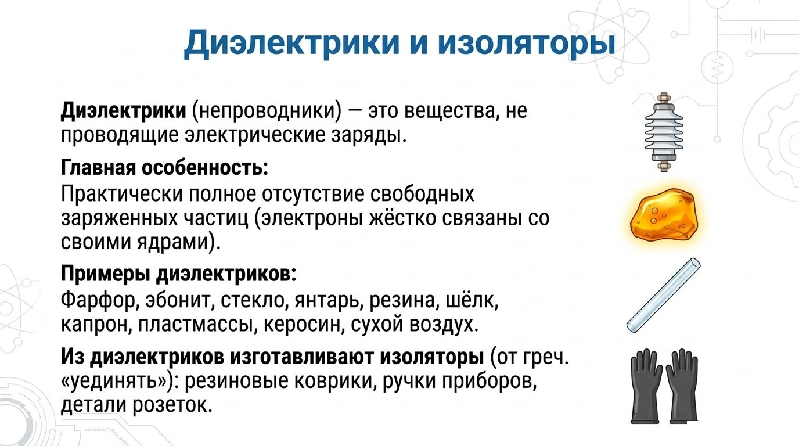
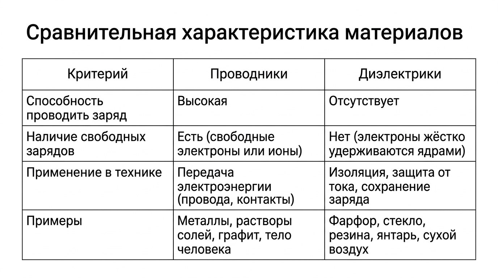
Новая информация · 9 минут
Проводники и диэлектрики
Проводники
Хорошо проводят электрические заряды: в них есть свободные подвижные заряды.
электроны движутся свободно
Диэлектрики (изоляторы)
Не проводят заряды: свободных заряженных частиц нет. Из них делают изоляторы.
заряды закреплены на местах
Запиши в тетрадь: проводники — есть свободные заряды (металлы, растворы, почва, тело человека); диэлектрики — нет (стекло, эбонит, пластмасса, резина, шёлк, воздух). Заряженный электроскоп разряжается, если коснуться его рукой или металлом, и не разряжается от стекла или эбонита.
Виртуальная работа · исследуем материалы
Лаборатория 1. Горит ли лампочка?
Подключи образец к клеммам X и Y. Лупа показывает, что внутри материала. Лампочка горит — проводник, не горит — диэлектрик. Опытов: 0 из 16.
Закрепляем
Разложи материалы по группам
Нажми на фото, потом на нужную группу.
Проводники
Диэлектрики
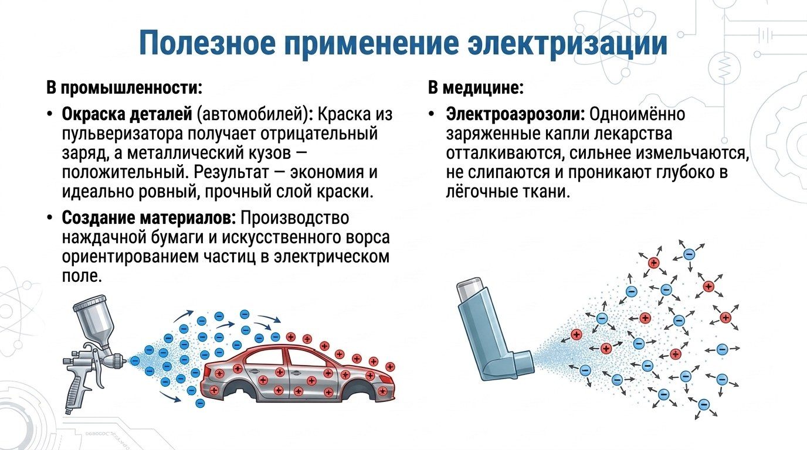
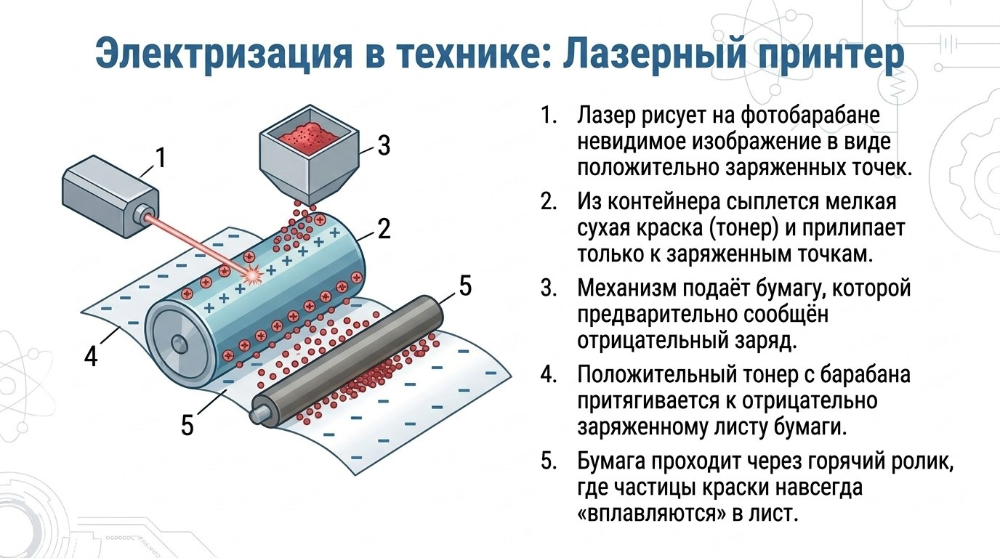
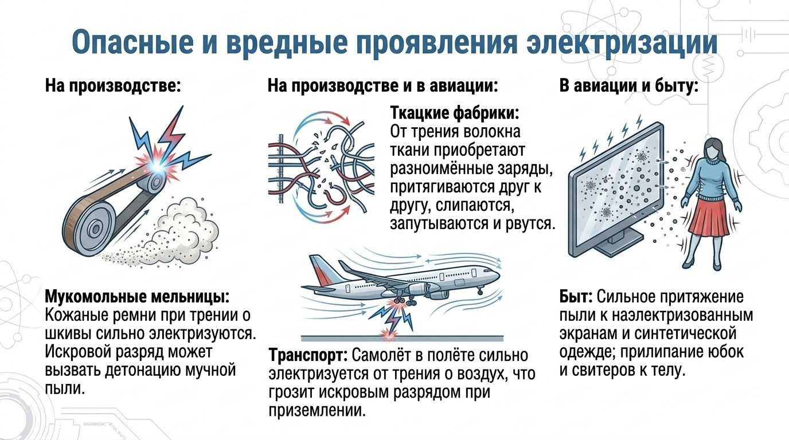
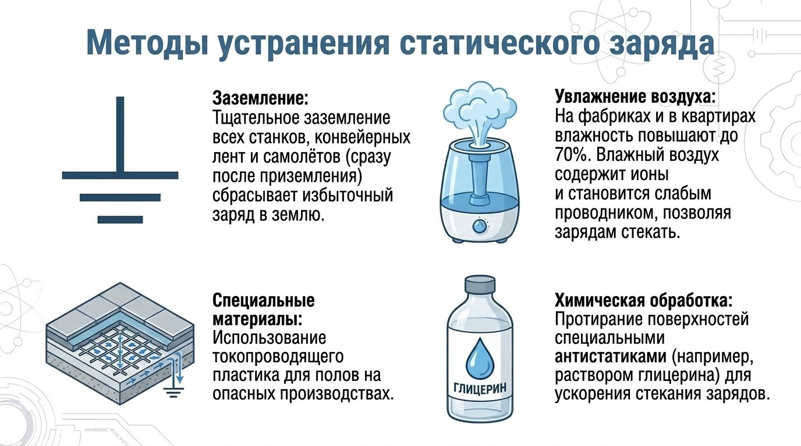
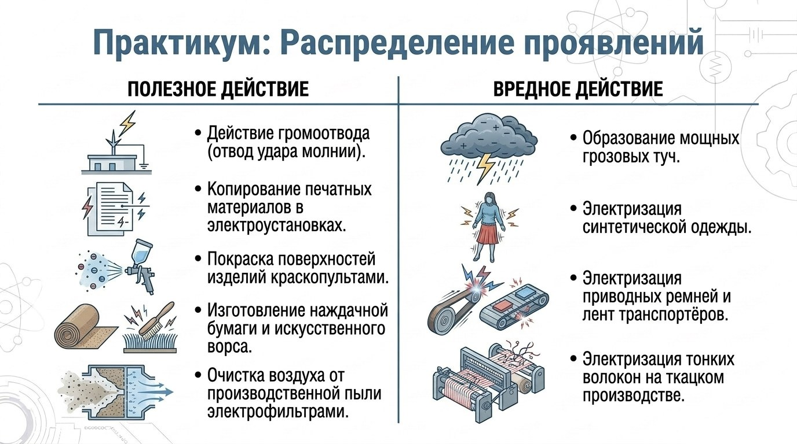
Проверка понимания · 3 минуты
Что произойдёт с заряженным электроскопом, если коснуться его шарика стеклянной палочкой?
Покажи ответ пальцами: A — 1, B — 2, C — 3, D — 4.
Практика · этап 1 · знание и понимание 2 балла
Чем проводники отличаются от диэлектриков?
Объясни и приведи по три примера каждых (учебник 1, контрольный вопрос 5, стр. 118).
Дескрипторы
Дескрипторы откроются, когда задание будет выполнено (кнопка «вперёд» на кликере).
Практика · этап 2 · задание 1 из 3 2 балла
Как зарядить положительно другой шарик, не изменяя заряда первого?
Учебник 1, упр. 12, №1: отрицательно заряженный металлический шарик. Выбери нужные шаги по порядку.
Шаги на выбор
Твой порядок
Нажимай шаги по порядку.
Практика · этап 2 · задание 2 из 3 2 балла
Как зарядить два шарика равными, но противоположными зарядами?
Учебник 1, упр. 12, №2: два одинаковых металлических шарика и отрицательно заряженный шарик.
Шаги на выбор
Твой порядок
Нажимай шаги по порядку.
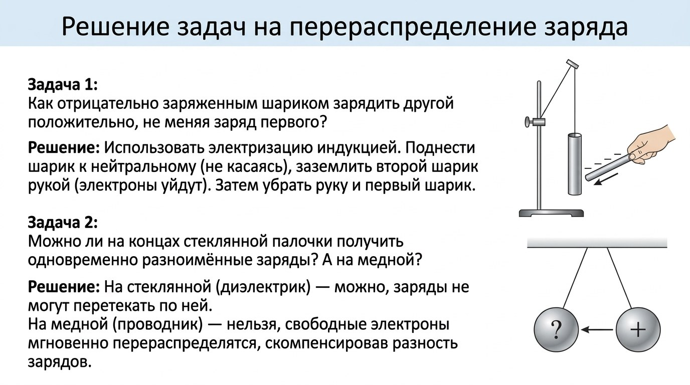
Практика · этап 2 · задание 3 из 3 2 балла
В каких случаях листочки опадут?
Электроскоп заряжен. К шарику прикасаются по очереди. Отметь и объясни.
Дескрипторы
Дескрипторы откроются, когда задание будет выполнено (кнопка «вперёд» на кликере).
называет случаи а и г — 1 балл (проверяет система)
Практика · этап 3 · анализ и оценка 2 балла
Пыль и щётка
Почему пыль прилипает к одежде при чистке её сухой щёткой и не прилипает, если щётка влажная (учебник 1, стр. 117, вопрос 1)? Приведи по одному примеру полезной и вредной электризации и способ защиты от вредной.
Дескрипторы
Дескрипторы откроются, когда задание будет выполнено (кнопка «вперёд» на кликере).
Полезная: принтер, копирование, покраска краскопультом, электрофильтры. Вредная: одежда, ремни и ленты транспортёров, волокна на ткацком производстве, молния.
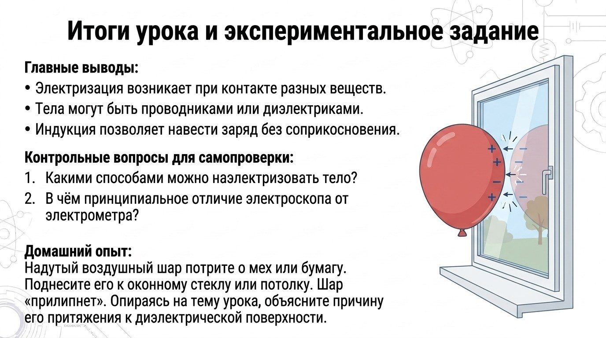
Конец урока · 5 минут
Итоги урока
Вернёмся к целям
Достигли ли мы целей? Покажите сигнал рукой по каждой цели.
- Объяснить, чем проводники отличаются от диэлектриков.
- Объяснить электризацию трением и влиянием (индукцией).
- Привести примеры полезной и вредной электризации.
Палец вверх — всё понятно · ладонь набок — есть вопросы · кулак — нужна помощь.
Выходной билет
Ответьте на листке или в своём телефоне (раздел «Выходной билет»).
- Чем проводник отличается от диэлектрика?
- В каком порядке заряжают шарик влиянием?
- Пример вредной электризации и как от неё защититься.
Результаты класса
Баллы каждого ученика (максимум 10) — на экране результатов: таблица и пьедестал.
Открыть результаты класса9–10 отлично · 7–8 хорошо · 5–6 удовлетворительно · менее 5 — нужна помощь.